“Hijo quiero que sepas que te busco y no dejaré de buscarte”
“Fuiste un hijo esperado, amado, todos te amabamos, papá, mamá y tus hermanos”
Quiera dios podamos unir nuestros caminos
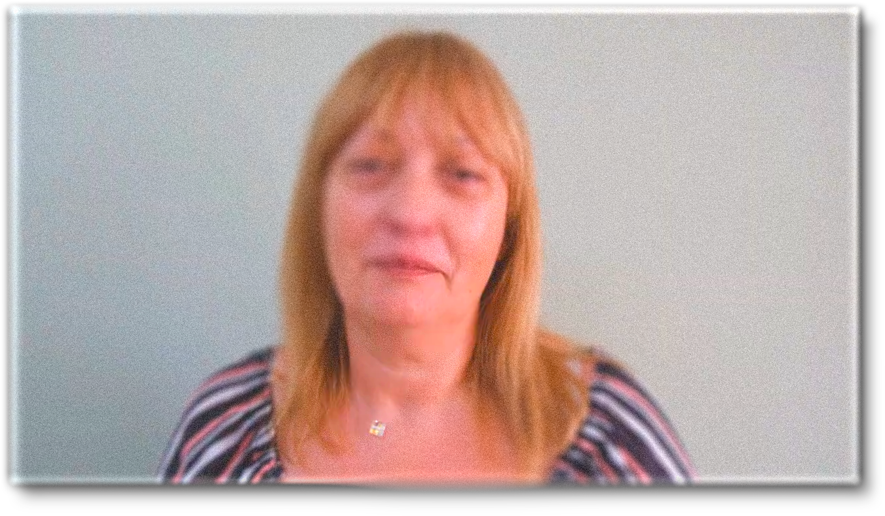
NUESTRO HIJO SIGUE DESAPARECIDO
El 2 de mayo de 1995 en la Clínica La Unión de la U.T.A. nace nuestro hijo.
Nos entregan un bebé muerto al que sepultamos.
Hay 5 médicos procesados, todos en libertad bajo caución y trabajando.
Distintas anomalías nos llevan a sospechar, por lo que hacemos la denuncia en el Juzgado Nº10 de San Isidro a cargo del Dr. Ecke.
Luego de 1 año y 9 meses se logra la exhumación del cuerpo y la práctica de A.D.N. arrojando como resultado incompatibilidad genética.
Esperamos justicia.
Por eso necesitamos que nos acompañen.
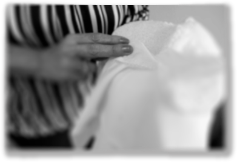
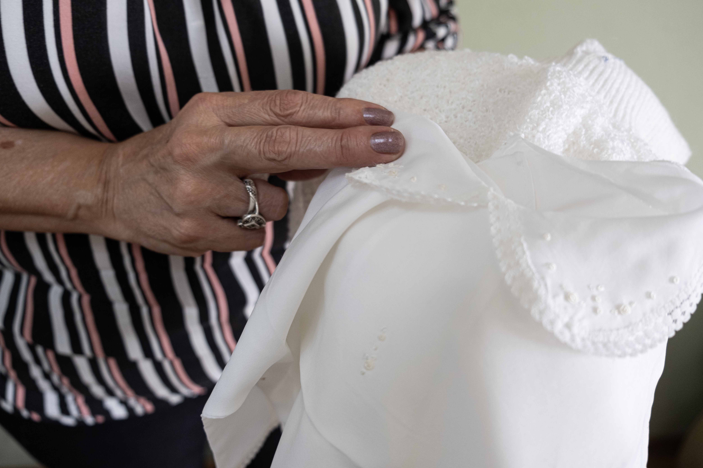
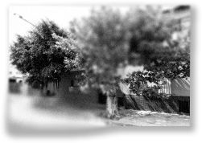
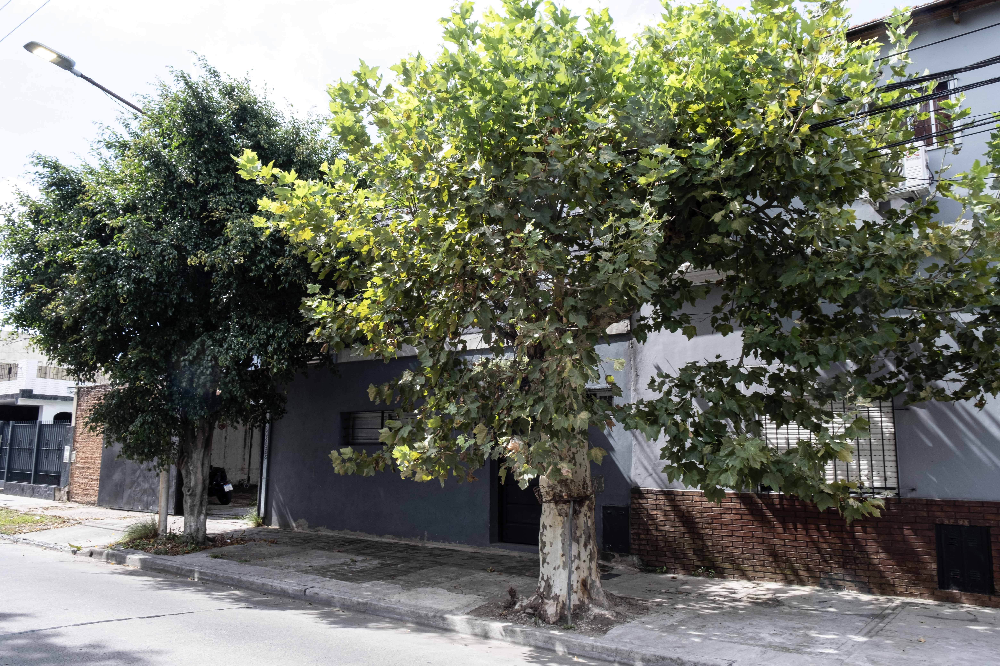
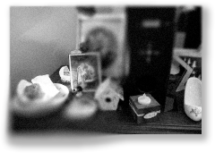
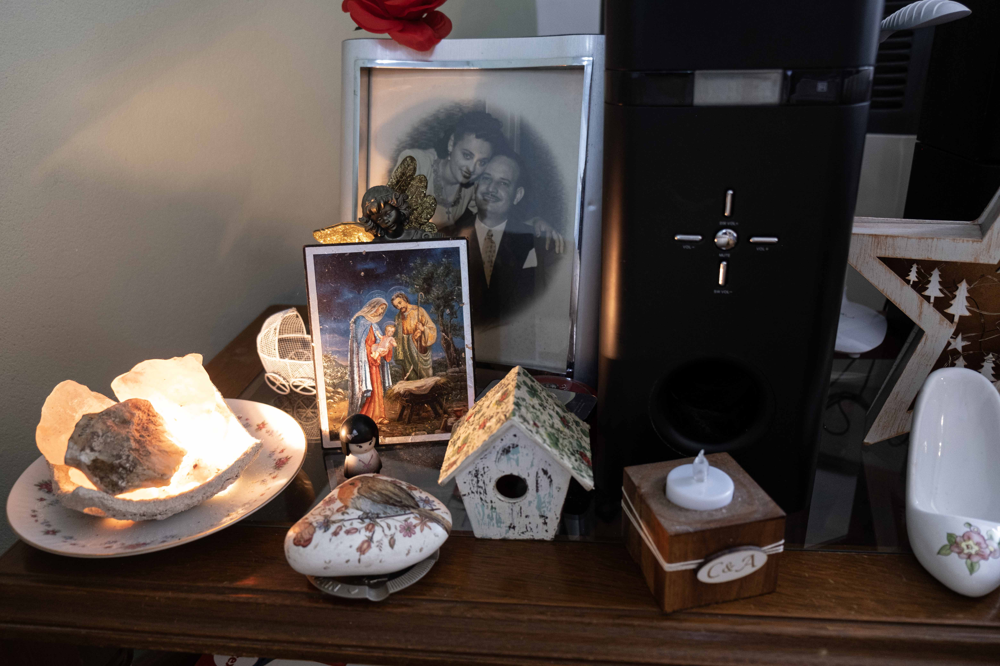
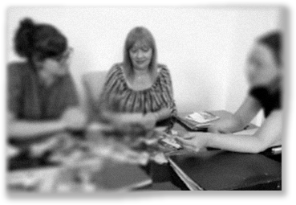
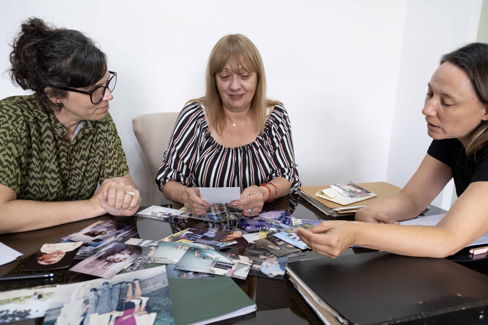
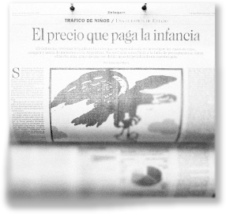
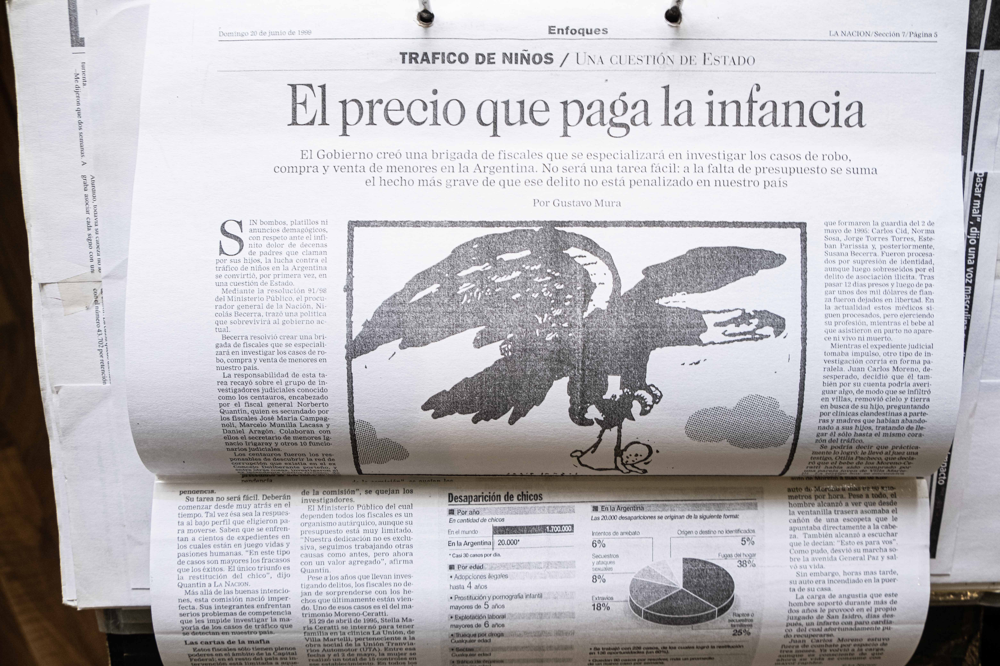
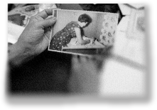
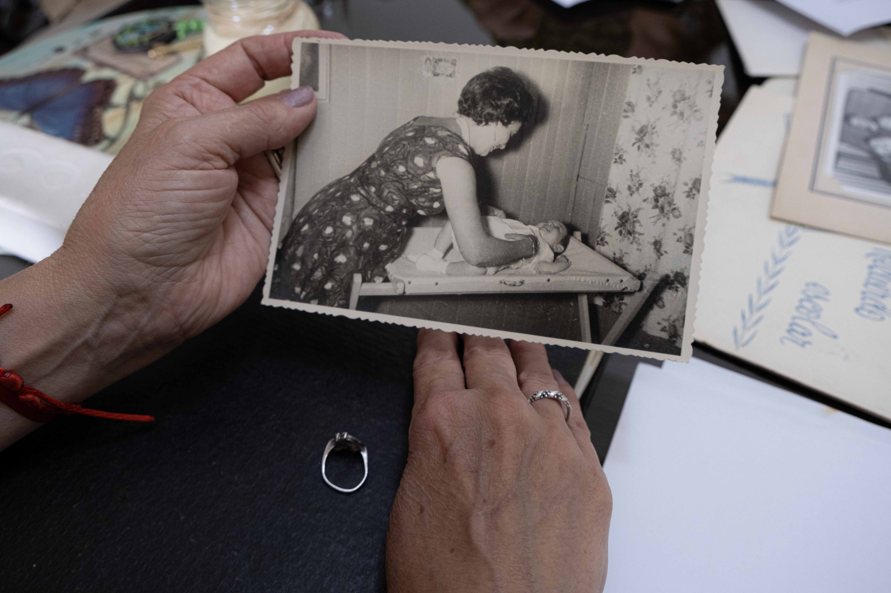
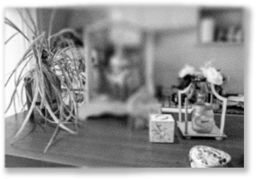
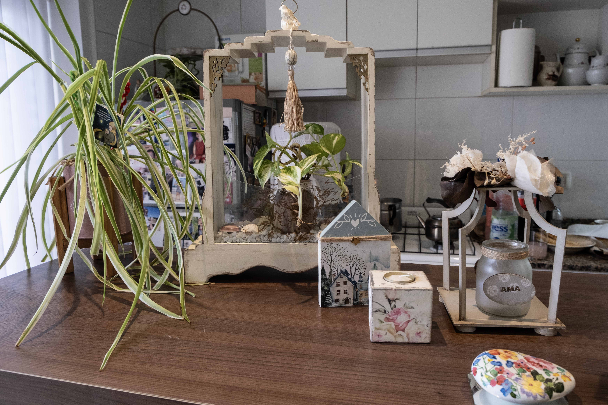
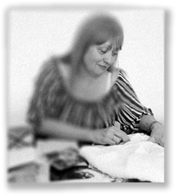
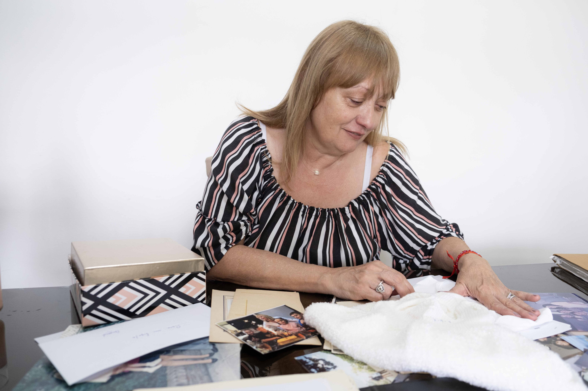
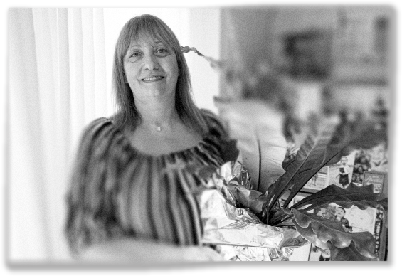
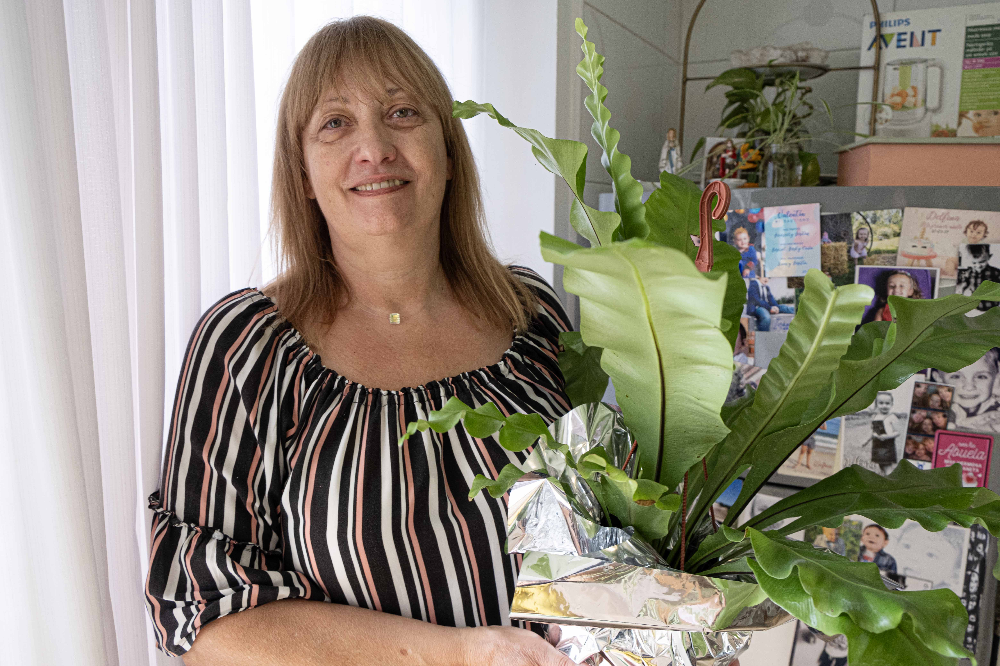
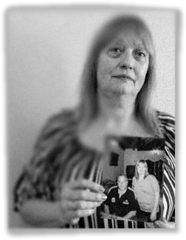
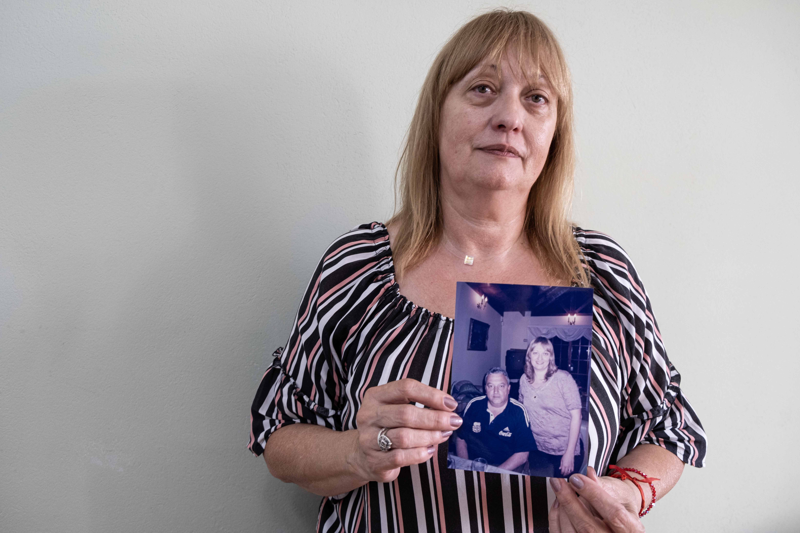
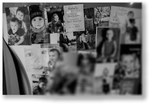
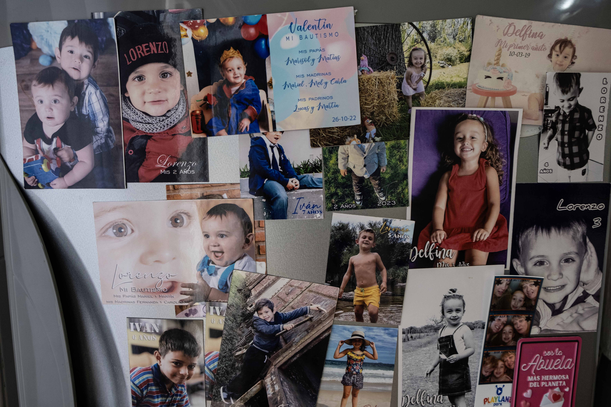
carta
Santos Lugares, 20 de febrero de 2025
Hijo/a Amado:
Quiera Dios lo que aquí voy a volcar tengamos la oportunidad de hablarlo mirándonos a los ojos. Esos ojos que quizás te preguntes de quién heredaste.
Sabés? fuiste esperado y amado por todos nosotros! Fue muy difícil para todos continuar sin tenerte, pero la esperanza de poder encontrarte y fundirnos en un abrazo nos movilizó a seguir adelante. No podíamos hundirnos en el sufrimiento. Tu padre y yo debíamos, también, seguir guiando y acompañando a tus hermanos en su crecimiento y, a pesar de este duro desafío y dolor que nos imponían.
¡Encontrarte!, porque no te regalamos, no te dimos, no te abandonamos, sino que nos fuiste arrebatado por médicos inescrupulosos que debían protegernos en el momento más maravilloso que nos regaló la vida: "llegar al mundo", ese mundo donde te esperábamos con amor.
¿Por qué se creyeron con el derecho a cambiar tu destino? ¿Por qué decidieron que no sea yo quien te abrace y tome tu mano para nunca soltarla, quien te acune, alimente, acaricie tus cabellos, te cuide en la enfermedad, ahuyente tus miedos, guíe tus primeros pasos y, en la vida?
¿Por qué no me permitieron disfrutar de tu inocencia y sonrisas frente al árbol de Navidad y ante la llegadade los Reyes Magos, vivir juntos la caída de tu primer diente y verte correr a descubrir la llegada del Ratón Pérez o Hada de los dientes?
¿Por qué nos prohibieron festejar, en familia, cada cumpleaños, cada etapa y logro en tu vida: egreso de preescolar, primaria, secundaria, universidad y muchos cosas más.
Duele, duele mucho!!
Las cosas fueron así y no pueden cambiarse pero, quiero que sepas que no lograron impedir que, en mi corazón, te abrace y acompañe cada día de estos 29 años y lo seguiré haciendo. No he dejado de preguntarme dónde estás, si en algún lugar de tu ser me sientes, si te han cuidado, si has recibido amor, si sos feliz. Si tengo la dicha de que vos, también, me estés buscando seguramente "me encontrarás", "nos encontraremos" porque tus hermanos y yo nunca dejaremos de buscarte y esperarte. Si lees esto es porque ya lo has conseguido. Tal vez te hayas preguntado tantas cosas como: de dónde viene tal o cual gusto por una comida, por un tipo de literatura, por las manualidades, inclinación a una profesión, música, tu carácter, fe, miedos, etc. Por si te lo has preguntado voy a contarte que: Me gusta leer sobre los ángeles, los milagros, cómo nos acompañan quienes nos antecedieron en su partida. Ver películas románticas, de suspenso, historias reales. En cuanto a las comidas voy a contarte que he cocinado mucho (dulce y salado), tomando recetas de mi mamá (tu abuela Lide), muchas de las cuales conservo y tendrá en su poder tu hermana Mariel (que es quien heredó el gusto por la cocina y suele realizar algunos de ellos).
Me hubiera gustado tanto comieras algunas de ellas, prepararte pastas, carne al horno, matambre, pizza, empanadas y la torta de cumpleaños, como hice cada año a tus hermanos.
Tu padre que, desgraciadamente, ya ha partido (8/6/22), se especializaba en lo relacionado a la parrilla: asado, pollo, etc., convirtiéndolo en el ritual del fin de semana acompañado de la clásica picada. Otra de las cosas que disfruto es hacer manualidades. Siendo tus hermanos pequeños traduje ese disfruto en la preparación de todo lo relacionado a sus cumpleaños: souvenirs, piñatas, adornos. Luego, ya ellos másgrandes, me incliné a pintar piezas de porcelana y de madera. Posiblemente a vos te guste algo de esto. Soy muy insistente con el orden y la limpieza, tal vez también lo seas.
Aquellas respuestas que no encuentres aquí quisiera poder dártelas yo, pero, si la vida así no lo quisiera, puede encontrarlas hablando con tus hermanos/hermanas, de quienes dejé en este archivo sus datos para que llegues fácilmente a ellos.
Hijo/a, en estos años he tratado de transformar este dolor en acción; trabajando, con amor, para que esto que nos han hecho y tantas mamás se viralice, que el Estado se comprometa, nos escuche y ceda espacios para que logremos llegar a reunirnos. Dejo en poder de este equipo, bajo la dirección de la Dra. Soledad Gesteiro, algunas fotos para que puedas ver mi rostro, el de tu padre, hermanos y sobrinos. Acaso te reconozcas en los ojos de alguno de tus hermanos o en sus cabellos. Tal vez en mi sonrisa, en la mirada de tu padre...
Hijo/a, hay tantos besos y abrazos que tengo guardados para darte. Mantengo la firme esperanza de poder hacerlo y entregarte "tu verdad".
Deseo tengas una buena vida y, prontito, nuestros caminos se unan.
Te encontraré, te amo siempre.
Mamá.
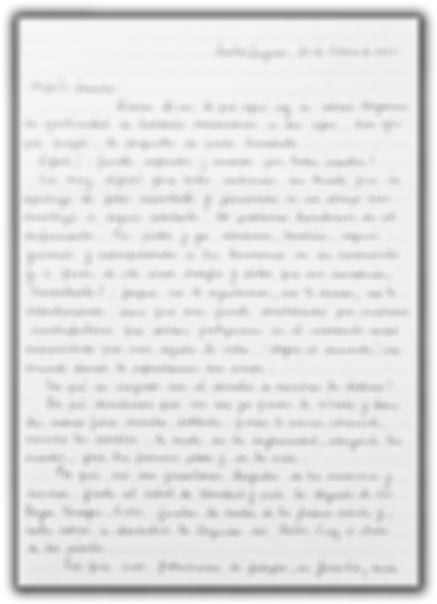
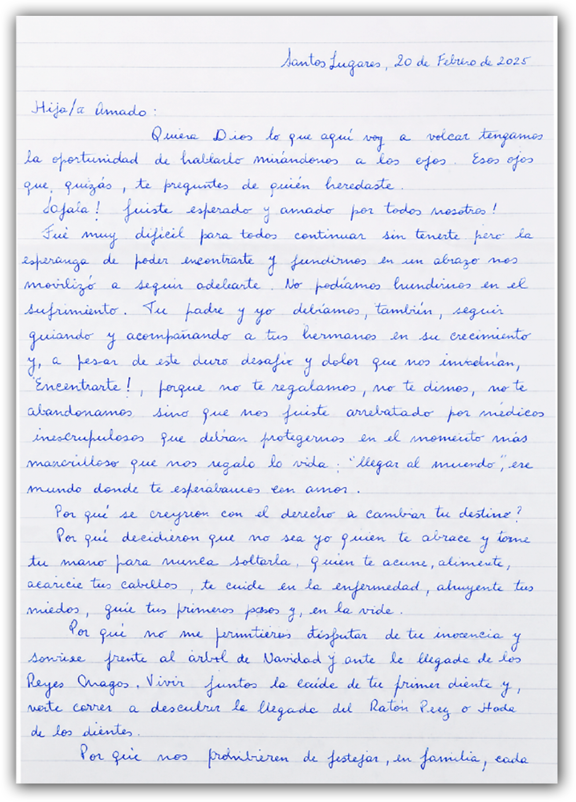
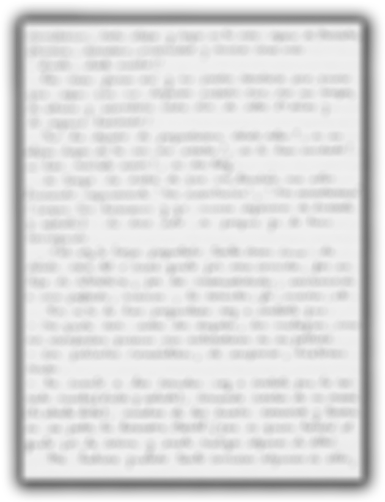
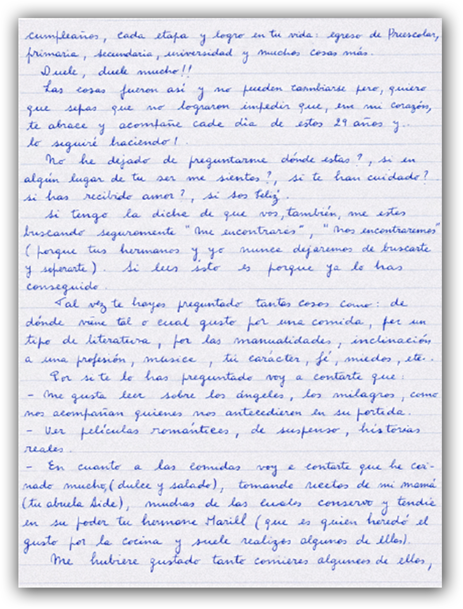
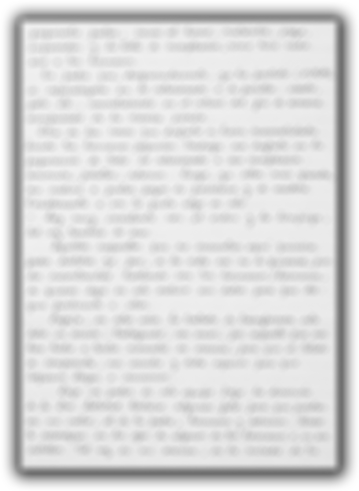
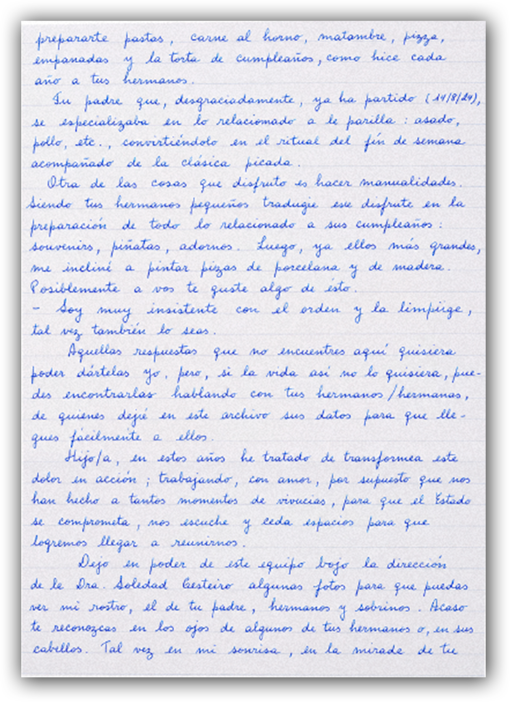
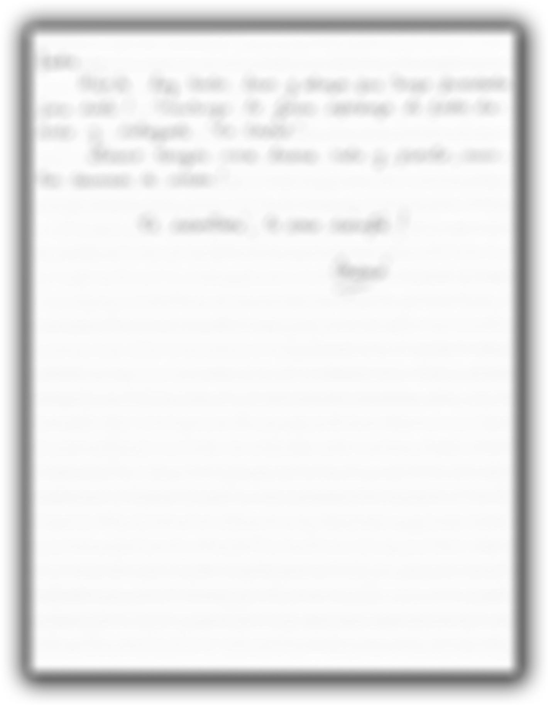
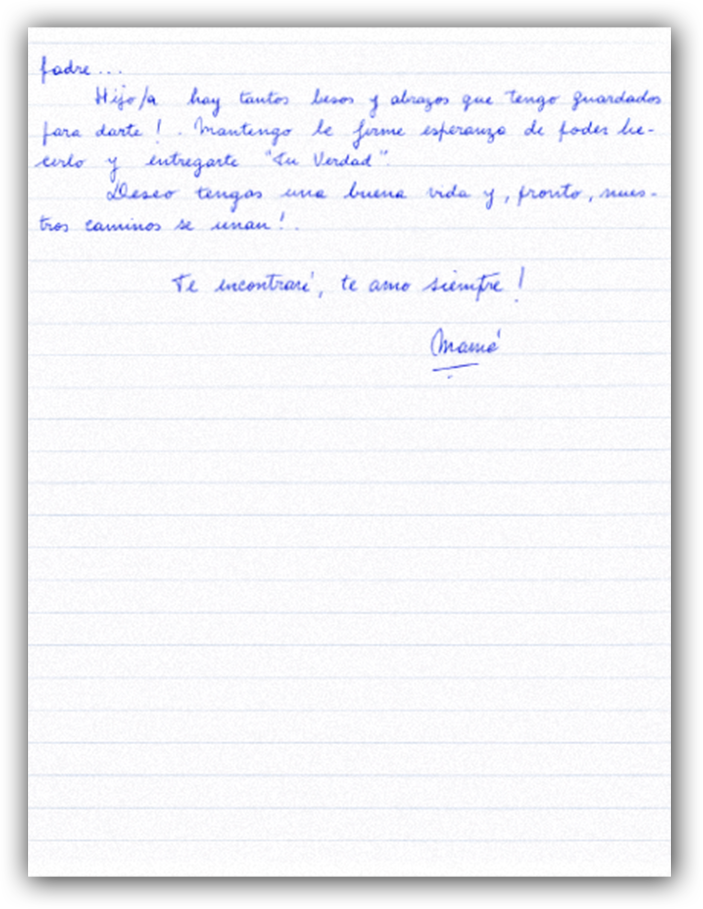